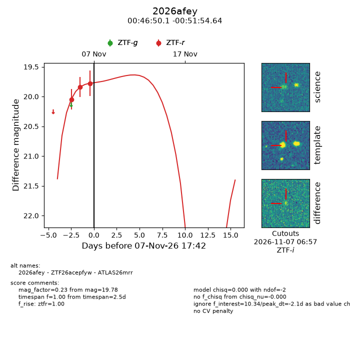
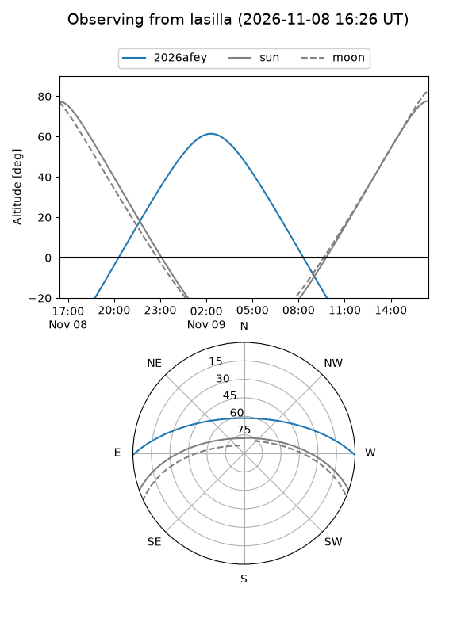
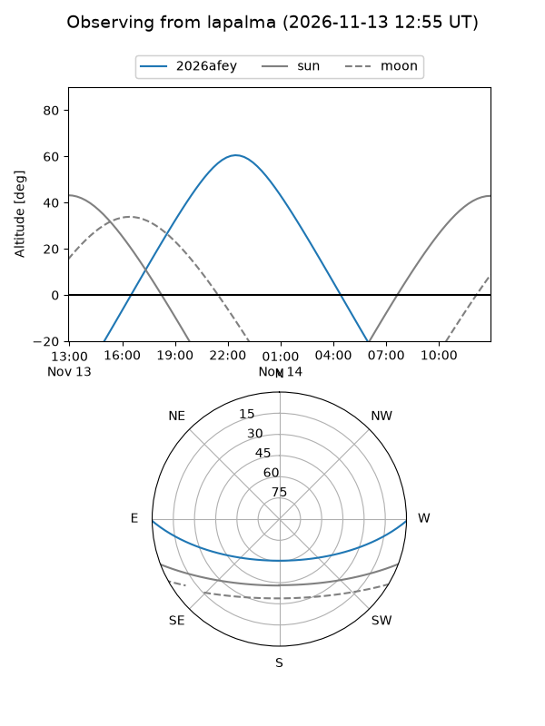
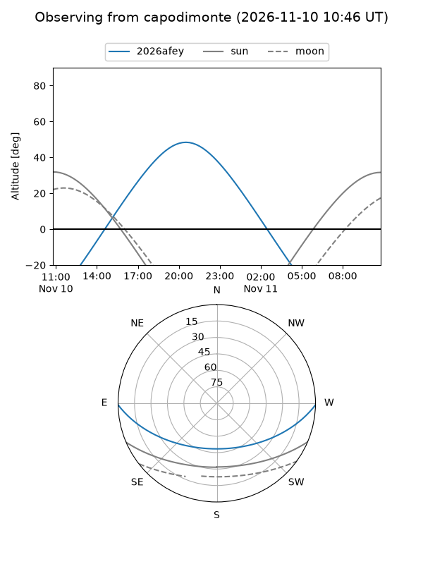
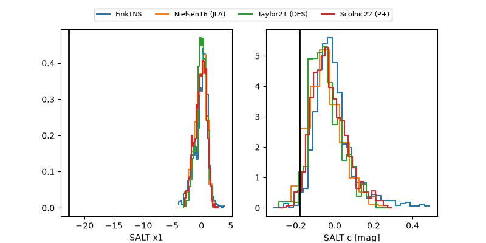

2026afey
Target 2026afey at 2026-11-07 17:44
Aliases and brokers:
FINK-ZTF: ztf.fink-portal.org/ZTF26acepfyw
Lasair-ZTF: lasair-ztf.lsst.ac.uk/objects/ZTF26acepfyw
ALeRCE-ZTF: alerce.online/object/ZTF26acepfyw
YSE-PZ: ziggy.ucolick.org/yse/transient_detail/2026afey
TNS name: wis-tns.org/object/2026afey
Direct TNS query: direct search
alt names
ZTF26acepfyw (ztf,fink_ztf)
2026afey (tns,yse)
ATLAS26mrr (atlas)
Coordinates:
equatorial (ra, dec) = 11.7088,-0.86518
equatorial (HMS+DMS) = 00:46:50.12,-00:51:54.64
galactic (l, b) = (120.3333,-63.71370)
Flags:
peak dt: -2.1
Photometry:
last ztfr=19.78
3 ztfr detections
Lightcurve

Visibility



Additional plots
